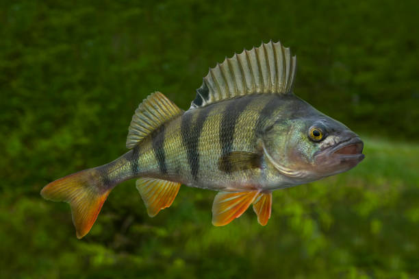
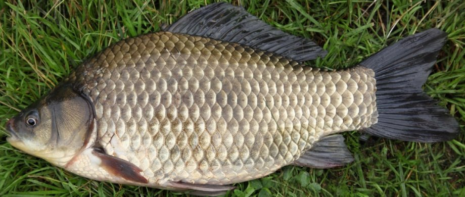

Рыбы — обширная группа водных челюстноротых позвоночных животных, ранее считавшаяся надклассом. Рыбы характеризуются жаберным дыханием на всех этапах постэмбрионального развития организма. С точки зрения кладистики четвероногие являются специализированными лопастепёрыми рыбами. Однако, поскольку традиционно понятие «рыбы» относится к парафилетической группе, не включающей четвероногих, в современной систематике рыбы отсутствуют как таксон.
Птицы — группа теплокровных яйцекладущих позвоночных животных, традиционно рассматриваемая в ранге отдельного класса. Один из наиболее характерных признаков — покров из перьев, предохраняющий тело от неблагоприятных изменений температуры и играющий важную роль при полёте. Способность к полёту — важнейшая особенность птиц (отсутствие её у некоторых видов — вторичное явление). Передние конечности приобрели форму крыльев. Птицы обладают особым строением органов дыхания и пищеварения, что тесно связано с их способностью летать. Ещё один отличительный признак птиц — наличие клюва.
Млекопита́ющие — класс позвоночных животных, основной отличительной особенностью которых является вскармливание детёнышей молоком. Класс входит в кладу синапсид надкласса четвероногих. По подсчётам биологов, известно более 6500 современных видов млекопитающих, среди которых и вид Человек разумный; общее же число видов млекопитающих, включая вымершие, превышает 20 000. Млекопитающие распространены почти повсеместно. Произошли от высокоразвитых синапсид в конце триаса. К млекопитающим относят ныне живущих однопроходных, сумчатых и плацентарных, а также большое число вымерших групп. Современные виды, входящие в класс млекопитающих, объединяют в 26—29 отрядов.
| Класс | Вид |
|---|---|
| Рыбы | Окунь |
| Карп | |
| Лосось | |
| 35768 видов рыб | |
| Птицы | Ворона |
| Синица | |
| Воробей | |
| 10933 вида птиц | |
| Млекопитающие | Медведь |
| Жираф | |
| Белка | |
| более 20000 видов млекопитающих | |
Длина до 50 см, масса до 1,5 кг, редко - больше. Тело относительно высокое (у крупных особей горбатое), сжатое с боков. Голова большая. На челюстях, сошнике и нёбных костях многорядные щетинковидные зубы. На заднем крае жаберных крышек по острому шипу. Первый спинной плавник и имеет круглое чёрное пятно, характерное только для окуня. Грудные плавники жёлтые, брюшные и анальный - красные. Чешуя относительно крупная, плотно сидящая, ктеноидного типа, распространяется и на щёки. В боковой линии 54-68 чешуек.
Окраска окуня, как и большинства других рыб, зависит от мест обитания. Обычно спина у него тёмно-зелёная, бока зеленовато-жёлтые, брюхо желтоватое. Поперёк всего тела тянутся 5-9 поперечных тёмных полосок, которые делают окуня достаточно пёстрым; в некоторых случаях эти полоски трансформированы в расплывчатые пятна. Глаза оранжевые. Окуни, обитающие в прозрачной воде в местах со светлым песчаным или глинистым дном, светлее, полоски у них малозаметны. Окуни же из лесных озёр с чёрным тинистым дном отличаются более тёмными полосами и спиной, ярко-жёлтым брюхом. Как правило, темнее и самые крупные экземпляры. У молодых окуньков вариации в расцветке и общий её тон менее заметны, у нерестящихся более выразительны.
Размеры изменчивы: в бедных кормами естественных водоёмах на 2-м году жизни длина тела карася золотого 4-5 см, масса до 8-10 г, в богатых кормами - соответственно 20-25 см и 250-300 г; в озёрах встречаются золотые караси длиной до 50 см, массой до 4-5 кг. Тело высокое, сильно сжато с боков. Нередко длина тела превышает высоту лишь в 1,2-2 раза, в связи с чем его иногда называют карасём круглым. Чешуя крупная, плотно прилегающая, в боковой линии насчитывается 32-35 чешуек. Спинной плавник длинный, на вершине несколько закруглён. Хвостовой плавник слабовыемчатый. Парные плавники иногда бывают красноватого цвета. Голова небольшая. Рот маленький, конечный. Глоточные зубы однорядные.
Карася обыкновенного характеризует чрезвычайно высокая жизнестойкость, проявляемая им в самых неблагоприятных условиях. В зимний период он закапывается в ил, проводя всю зиму без движения и не питаясь. Даже при промерзании мелких водоёмов карась не погибает, полностью восстанавливая жизненные функции после глубокого охлаждения. Может жить и при постоянно невысокой температуре воды, при этом, однако, не размножается. Карась обыкновенный — одна из основных промысловых рыб пресноводных водоёмов. Часто его подсаживают в пруды карповых хозяйств в качестве добавочной рыбы. В озёрно-речном рыбном хозяйстве удельный вес карася невелик, поскольку не на всех водоёмах, в которых он обитает, ведётся промысловый лов рыбы.